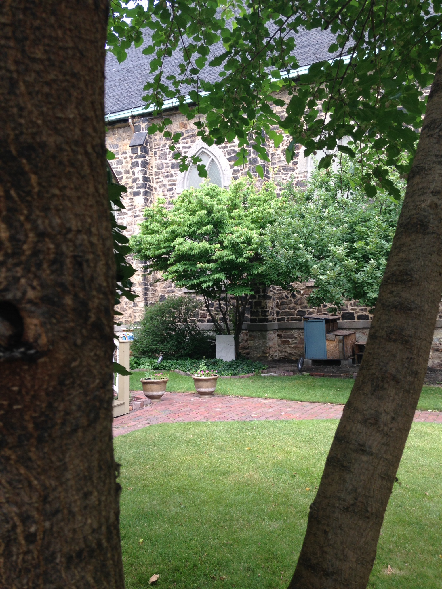
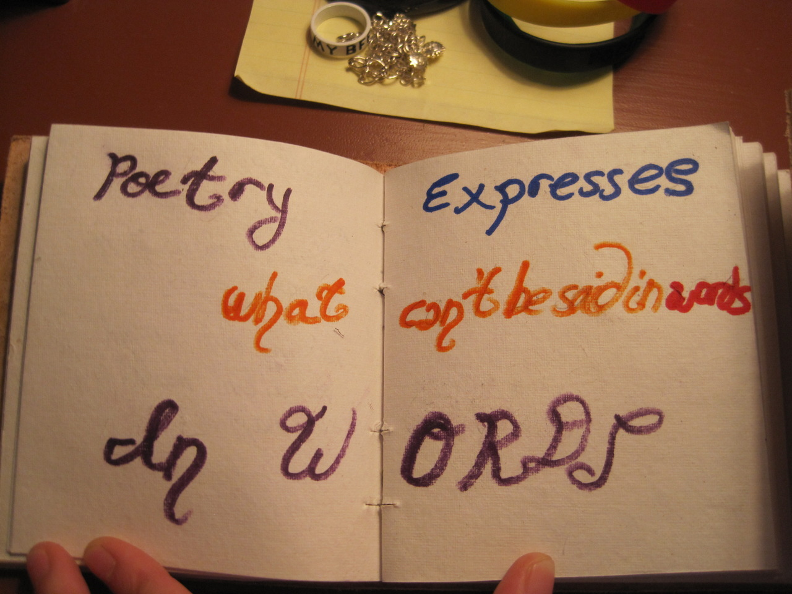

|  |  |
OPENINGSAs an amateur photographer, I draw inspiration from the world around me. In this album, I imagine all the different connotations of the word 'Openings'. What it means to open, to expose, uncover, or become aware. |
QUOTESHere is a collection of quotes that changed my life, or just made me see part of it in a different perspective. The ones I've put on a picture background are my own. And the others I've pulled from famous authors and thinkers. |